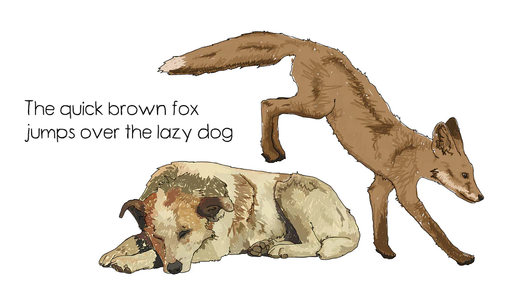
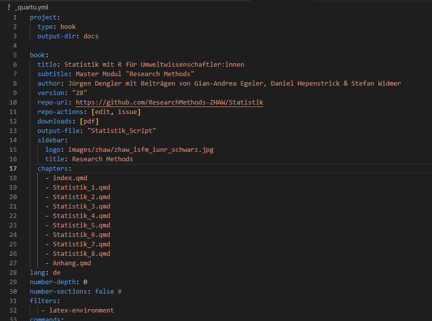
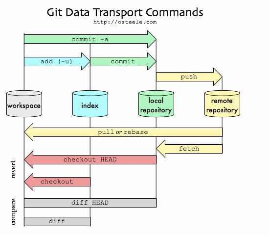

Quarto Schulung
2024-02-13
Heute
Ablauf
- Markup und Markdown
- Pandoc und Quarto
- HTML Outputs publizieren
- Kollaboration mit Textfiles
Ziele
- Vorteile einfacher Textdokumente kennen
- Basics von Markdown kennen
- Basics von Quarto kennen
- Kollaboration mit Git und GitHub
Plaintext, Markup und Markdown
Weniger ist mehr
Vorteile reiner Textfiles (plain text)
- Plattformunabhängigkeit
- Geringe Dateigröße
- Einfache Handhabung
- Versionskontrolle
- Langfristige Kompatibilität
- Suchbarkeit
- Leichte Integration
Was ist eine Markup Sprache?
- Auszeichnungssprache zur Strukturierung von Texten
- Maschinenlesebar (Verwendung von Tags / Symbolen)
- Klare Trennung von Inhalt und Formatierung
- What you see is what you mean (WYSIWYM)
Was für Markup Sprachen gibt es?
| Sprache | Beispiel |
|---|---|
| HTML | <b>Fetter Text</b> |
| LaTeX | \textbf{Fetter Text} |
| Markdown | **Fetter Text** |
Was ist Markdown?
- Leichtgewichtige Markup-Sprache für einfaches Textformatieren
- Einfach zu erlernen
- Maschinenlesbar und Menschenlesbar
- Frontend für Latex / HTML
Markdown Syntax
# A story of a fox
The *quick* brown fox **jumps** over the lazy [dog](https://en.wikipedia.org/wiki/Dog).
A story of a fox
The quick brown fox jumps over the lazy dog.
Texteditor
- Ein guter Texteditor ist wichtig
- Empfehlungen
- VSCode: code.visualstudio.com
- RStudio: posit.co/download/rstudio-desktop/
- Pulsar: pulsar-edit.dev
Übung Markdown 🛠️
- Konvertiere deinen mitgebrachten Text in Markdown.
- Falls du keinen eigenen Text mitbebracht hast, nimm folgenden: bit.ly/42vBKuu
Pandoc
Was ist Pandoc?
- Open-Source-Tool zur Konvertierung von Markup-Sprachen
- Vielfältige Ein- und Ausgabeformate
- Kein grafisches Userinterface (GUI), wird über den Terminal bedient (cli-tool)
If you need to convert files from one markup format into another, pandoc is your swiss-army knife. Pandoc can convert between the following formats

Übung Pandoc 🛠️
Installiert Pandoc von pandoc.org.
Öffnet ein Terminal im Folder, wo ihr das Markdown File erstellt habt
Konvertiert das Markdown File in html mit folgendem Command:
- Der Befehl
pandocruft das Commandline Tool pandoc auf - Das Argument
markdown.md:- Ist ein sogenanntes Positionalargument (engl: positional argument)
- Gilt als Input File
- Die Markup Sprache des Input Files wird von der Dateierweiterung inferiert (
.md= Markdown) - Da wir kein Output definiert haben, wird standartmässig
htmlherausgegeben - Um ein PDF zu erstellen müsste eine zusätzliche Komponente installiert werden
Übung Pandoc 🛠️
-o output.html:- ist ein named argument
- definiert das Output File
- Die Markup Sprache des Output files wird von der Dateierweiterung inferiert (
.html)
Übung Pandoc 🛠️
Die Verwendung von Commandline-Programmen (cli) ist eine wichtige und nützliche Fähigkeit
cli Tools verfügen meist über eine eingebaute Hilfestellung (
-h/--help)pandoc [OPTIONS] [FILES] -f FORMAT, -r FORMAT --from=FORMAT, --read=FORMAT -t FORMAT, -w FORMAT --to=FORMAT, --write=FORMAT -o FILE --output=FILE --data-dir=DIRECTORY -M KEY[:VALUE] --metadata=KEY[:VALUE] --metadata-file=FILE -d FILE --defaults=FILE --file-scope[=true|false] --sandbox[=true|false] -s[true|false] --standalone[=true|false] --template=FILE ...die Hilfestellungen sind etwas gewöhnungsbedürftig, dafür aber umfangreich
Übung Pandoc 🛠️
Der Umgang mit dem Terminal ist eine wichtige und nützliche Fähigkeit.
- mit
cdkann man in Folders hinein navigieren (cd Documents) - mit
cd ..kann man aus Folders hinaus navigieren - das aktuelle Verzeichnis anzeigen lassen
- Windows:
echo %cd% - Linux / Mac:
pwd
- Windows:
- mit
mkdirkann man ein Verzeichnis erstellen (mkdir verzeichnis)
Quarto
Was ist Quarto?
- Ebenfalls ein Open-Source cli tool
- Baut auf Markdown und Pandoc auf

- Erweitert die standart Markdown-Sprache mit nützlichen Elementen
- Integriert die Ausführung von Code (R, Python, Julia, SQL…)
- Liefert ansprechende out-of-the-box Templates

Ausgabeformate
html: Books, Slides, Blogs…pdf: Books, Slidesepub: Booksword: Bookspptx: Slides
Übung Quarto 🛠️
Installiert quarto quarto.org
Öffnet ein Terminal im Folder, wo ihr das Markdown File erstellt habt
Konvertiert das Markdown File in html mit folgendem Command:
renderist eine Funktion des Programmsquarto- Auch hier ist
markdown.mdein positionales Argument - Der Output ist (wenn nicht anders definiert) ein HTML-File
Übung Quarto 🛠️
Interaktives entwickeln von Dokumenten mit
renderist umständlich.quarto previewermöglicht ein live-preview (bessere user experience)
HTML und das Web
HTML vs PDF
- Der bisherige de facto Standart für Lehrmaterialien: PDFs via Moodle
- PDFs haben Vorteile, aber auch viele Limitierungen
- Vorteile von PDFs:
- Stabilie Formatierung (Drucken)
- Ein eizige Datei (kann leicht gespeichert/kopiert werden)
- Offline nutzbar
- Nachteile von PDFs
- Kaum öffentliche Wahrnehmung (OER)
- Nicht responsiv für verschiedene devices (BYOD)
- Keine interaktiven Elemente
- Schlecht übersetzbar (Deutsch ↔︎ Englisch)
- Schlechte Accessibility-Features (z.B. Screen Readers)
HTML veröffentlichen
- HTML Files können zwar wie PDFs gespeichert und geteilt werden, dies ist jedoch unüblich und ungewohnt
- Sinnvoller und üblicher: Webseiten erstellen. Dazu gibt es eine vielzahl von Optionen:
- GitHub Pages (ZHAW Internes GitHub)
- Netlify
- Posit Connect (ZHAW Internes Posit Connect)
- QuartoPub
- Confluence (ZHAW Internes Confluence)
Übung HTML veröffentlichen 🛠️
Netlify Drop
- Öffnet die Website app.netlify.com/drop (kein Login nötig)
- Drag-and-drop den Ordner mit dem HTML Outputfile aus der Übung Quarto
- Wartet bis der Upload fertig ist und im Deploy log Complete angezeigt wird
- Klick auf Open production deploy
- Die Website befindet sich auf irgendwas.netlify.app/filename.html
- filename.html muss noch hinzugefügt werden!
- dies kann vermieden werden, wenn statt filename.html index.html verwendet wird
Übung HTML veröffentlichen 🛠️
Netlify Drop
Diese Methode ist zwar sehr einfach, aber:
- Ohne Login ist Veröffentlichung zeitlich beschränkt → mit Login unbeschränkt
- Benötigt drag-and-drop → Kommandozeile
quarto publish netlify - URL ist wenig ansprechend → Mit
CNAMEauf eigene Domain (siehe dxi.ai)
Übung HTML veröffentlichen 🛠️
ZHAW Posit Connect
- RStudio Publish
- Klickt auf den Publish Knopf und wählt “Posit Connect”
- Folgt den Anweisungen und gebt den Posit Connect Server an ->
statistik-ide.zhaw.ch/rsconnect - Überprüft die Files und den Title und klickt dann auf den Publish Button
- Im Browser seht ihr nun euer html.
Übung HTML veröffentlichen 🛠️
ZHAW Posit Connect
- Konsole:
- In der Kosole führt den Command
quarto publish connectaus - Gebt den Link zum Posit Connect Server an ->
https://statistik-ide.zhaw.ch/rsconnect/ - Generiert einen API Key auf ZHAW Posit Connect und kopiert es in die Console
- Mit Enter wird alles publiziert. Im _publish.yml sieht ihr eure Einstellungen.
- Im Browser seht ihr nun euer html.
- In der Kosole führt den Command
Markdown / Quarto Advanced
Übung YAML Header 🛠️
Wird benutzt um Metadaten für das Quarto File festzulegen, wie zum Beispiel Titel, Autor und Datum.
Der Header wird ganz am anfang des Quarto Files beginnend und endend mit --- hinzugefügt.
Übung YAML Header 🛠️
Es können aber auch Information zu verschiedenen Ausgabeformaten festgelegt werden, wie etwa, dass wir im HTML Output keinen Table of Content haben wollen, während wir beim Generieren eines PDFs einen Table of Content haben wollen.
Übung Quarto Features 🛠️
Bilder einpflegen (mit verschiedenen Layouts sowie Captions / Subcaptions)
Tabellen einpflegen (online Tables generator https://www.tablesgenerator.com/markdown_tables)
Crossreference
- Figures: https://quarto.org/docs/authoring/cross-references.html#figures
- Tables: https://quarto.org/docs/authoring/cross-references.html#tables
- Sections: https://quarto.org/docs/authoring/cross-references.html#sections
- Limitierung: nicht section name, nur nummer
Literaturverzeichnis https://quarto.org/docs/authoring/footnotes-and-citations.html
Callout Blocks
HTML Slides: https://quarto.org/docs/reference/formats/presentations/revealjs.html
Übung Quarto Codes 🛠️
Eine grosse stärke sind die integrierten Computations von Programmiersprachen.
Chunk Options
Hier sind einige Beispiele wie Chunk Options aussehen können
Quarto Projects
Von einem File auf N+ Files
Setup:
- Markdown-Dateien (*.qmd)
- Bilder und Grafiken
- Quarto-Konfigurationsdatei: _quarto.yml
- Zusätzliche Ressourcen
Wichtige Anpassungen:
- yaml-header wandert von index.qmd zu _quarto.yml
- index.qmd ist nicht mehr optional

Git(Hub)
Git(Hub)
Git: Verteiltes Versionskontrollsystem für die Nachverfolgung von Änderungen im Quellcode während der Softwareentwicklung. Ermöglicht Zusammenarbeit, Verwaltung von Codeversionen und Änderungsverfolgung. Bekannt für Geschwindigkeit und Effizienz.
–
GitHub: Webplattform für Hosting von Git-Repositories. Bietet Tools für Zusammenarbeit, Codeüberprüfung und Projektverwaltung. Beliebt bei Entwicklern zur Teilung, Zusammenarbeit und Beitrag zu Open-Source-Projekten. Enthält Funktionen wie Issues und Pull Requests.
Plaintext Files & Versioncontrol
TODO: @Nils was willst du hier?
Git Workflow
Commit: Speichert eine Version mit Änderungen.Push: Hochladen von lokalen Commits ins Remote Repository.Pull: Abrufen und Einpflegen von Änderungen aus dem Remote Repository.Merge Request: Anfrage zur Überführung von Änderungen zwischen Branches.Merge Conflict: Problem bei der automatischen Zusammenführung von Branches.Issue: Verfolgung von Problemen, Vorschlägen oder Aufgaben in Projekten.

GitHub Desktop
Übung
- Klonen Sie die Übungsunterlagen von Fit-mit-Markdown
- Erstellen Sie einen neuen Branch
- Bearbeiten Sie etwas im Dokument
- Commiten und Pushen Sie die Änderungen
- Erstellen Sie einen Merge Request auf GitHub